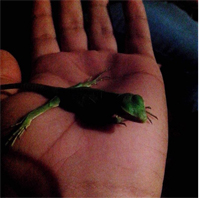
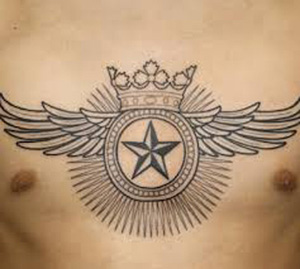
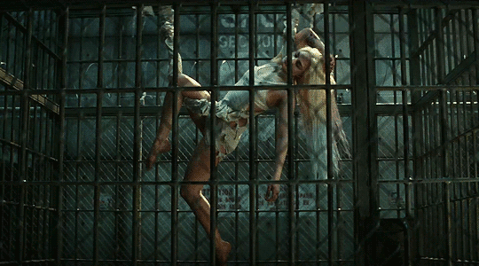
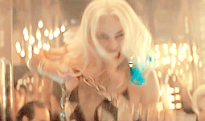
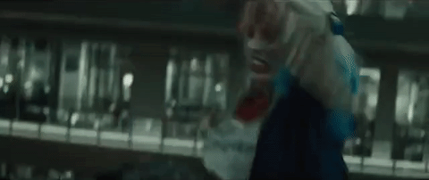
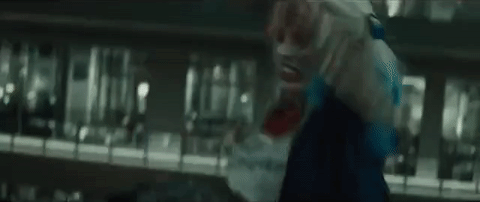
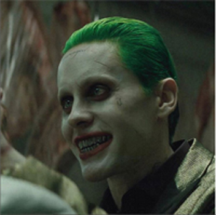
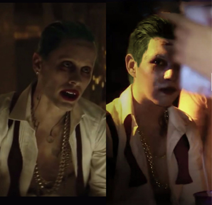
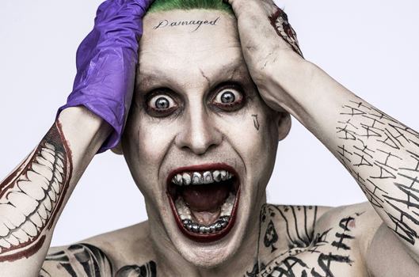

Mis obsesiones
Tengo algunas obsesiones raras, por ejemplo: Me llama mucho la atención ver especies de animales exóticos, ya que quería ser biólogo y desde niño me interesaban mucho los seres vivos y la naturaleza. Cuando veo a alguien mascotas a veces se las pido prestadas un momento para jugar con ellas, como a un tío que me presto su iguana, era muy pequeña y decidí tomarle una foto.

Foto de la mascota de mi tio en mi mano
También me gusta mucho ver tatuajes, pienso que es un arte, es lo único que te puedes llevar a la tumba contigo, son cosas que le dan un plus en tu cuerpo para que sea más llamativo. También no me gustan cualquier tatuaje, por ejemplo, no me gustan los que están muy saturados de tinta, ni muy grandes, me gustan que sean pequeños, símbolos, alas, geométricos, y que sean originales.

Foto de ejemplo de los tipos de tatuajes que me gustan(No soy yo).
Mi obsesión por el personaje de Harley Quinn interpretado por Margot Robbie en la película de Suicide Squad. Me gusta porque es un personaje que por amor incondicional a su amado Mr. J quien la maltrató psicológicamente y físicamente, le practicó lavado de cerebro,eso y mas fue lo que la llevo a convertirse de la Psiquiatra Dra. Harleen Frances Quinzel a Harley Quinn(apodo puesto por Joker). Ahora es una chica sexy, hermosa, loca, letal, intrépida y asesina que aún sigue amando al Joker a pesar de todo. Quizás no sea el mejor ejemplo a seguir pero me llama mucho la atención la vida de esta mujer porque a todo le encuentra un lado positivo y divertido a las cosas.
  


Algunas escenas de Harley Quinn en Suicide Squad
Es tanto lo que me obsesiona este personaje que amigos me han regalado un comic y un collar sobre ella.

Al igual que ella también me llama un poco la vida que tuvo el Joker para convertirse en el loco que es ahora. Incluso en mi cuarto tengo un poster de él, y en Halloween 2016 me disfracé de Joker en la versión de la película.
  Esta película también me encantó demasiado ya la he visto más de 20 veces, me se casi todos los diálogos y escenas de memoria. Cuando vi el primer trailer quede encantado y esperé más de un año esperando a que saliera el estreno de la película, aunque ya tenia mis boletos para ir a la premiere de las 12:00am la cancelaron un día antes, no me lo podía creer, creía que era una broma pero no fue así, fue muy trágico para mi, pero el cine me dio como compensación 10 entradas gratis por cada boleto que había comprado para Suicide Squad.
Imagen del escuadrón suicida reunidos para luchar.